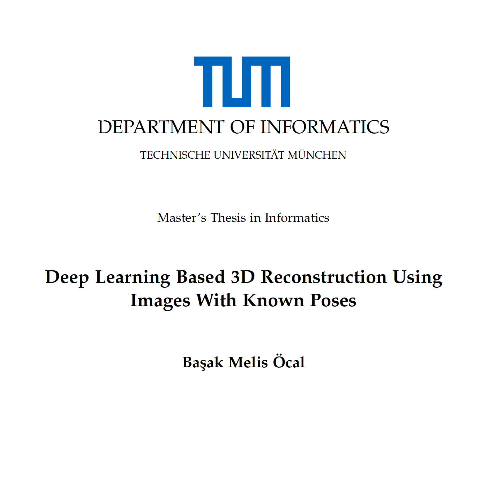

|
I am a third-year PhD student in the field of computer vision and machine learning, supervised by Prof. Theo Gevers and co-supervised by Dr. Sezer Karaoğlu at the Delta Lab, which is a collaboration between the University of Amsterdam and Bosch. I closely collaborate with Dr. Maxim Tatarchenko and Dr. Vien Ngo. My research interests mainly lie in scene understanding, 3D reconstruction, view synthesis and unsupervised learning for autonomous driving and robotic applications. In 2022, I obtained my Master’s degree in Informatics from Technical University of Munich with a focus on computer vision and machine learning. I worked on several research projects at the Computer Vision Group led by Prof. Daniel Cremers. I completed my master's thesis on 3D reconstruction at the Smart Robotics Lab under Prof. Stefan Leutenegger. Email / LinkedIn / Google Scholar / Github / Twitter |

|
|
July, 2024: Our work SceneTeller: Language-to-3D Scene Generation was accepted at ECCV 2024! The code is now available! April, 2024: I gave a talk on Learning Vision Based Autonomous Lateral Vehicle Control without Supervision with İdil Sülo to ATS Research group at Scania. January, 2023: Our work Learning Vision Based Autonomous Lateral Vehicle Control without Supervision was accepted at Applied Intelligence! September, 2022: I started my PhD in computer vision, under the supervision of Prof. Theo Gevers at the UvA-Bosch Delta Lab! |
|
|

|
RealDiff: Real-world 3D Shape Completion using Self-Supervised Diffusion Models
Melis Öcal, Maxim Tatarchenko, Sezer Karaoğlu, Theo Gevers Preprint (arXiv), 2024 project page / arXiv RealDiff formulates point cloud completion as a conditional generation problem directly on real-world measurements in a self-supervised way. To better deal with noisy observations, we leverage additional geometric cues. |
|
|
SceneTeller: Language-to-3D Scene Generation
Melis Öcal, Maxim Tatarchenko, Sezer Karaoğlu, Theo Gevers European Conference on Computer Vision, 2024 project page / arXiv Built using in-context learning, CAD model retrieval and 3DGS-based stylization, SceneTeller generates realistic and high-quality 3D spaces from natural language prompts. |
|
|
Learning Vision Based Autonomous Lateral Vehicle Control without Supervision
Qadeer Khan, İdil Sülo, Melis Öcal, Daniel Cremers Applied Intelligence, 2023 project page / paper A lateral vehicle control network can be trained from only an unlabeled sequence of images using novel view synthesis, without the need for a specialized setup on the car. |
|  |
Master's Thesis - Deep Learning Based 3D Reconstruction Using Images With Known Poses
Melis Öcal Technical University of Munich, 2022 |
|
CVPR, ICCV/ECCV, ICLR, NeurIPS |
|
Computer Vision 1, 2023-2024 |